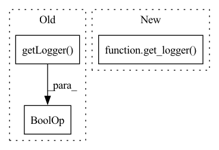

Pattern ID :16525
Before Change
np.random.seed(seed)
torch.manual_seed(seed)
self._env.seed(seed)
self._logger = logger or logging.getLogger(__name__)
self.run()
@abstractmethodAfter Change
np.random.seed(seed)
torch.manual_seed(seed)
self._env.seed(seed)
self._logger = get_logger()
self.run()
@abstractmethodIn pattern: SUPERPATTERN
Frequency: 4
Non-data size: 3
Instances Fragment ID: 55651729
Project Name: syuntoku14/pytorch-rl-il
Commit Name: 9d8934b47f7cc799b4c77d715f2028ca3f267413
Time: 2020-03-24
Author: syuntoku14@keio.jp
File Name: rlil/experiments/batch_trainer.py
M Class Name: OfflineTrainer
N Class Name: OfflineTrainer
M Method Name: __init__(8)
N Method Name: __init__(9)
M Parent Class: ABC
N Parent Class: ABC
M File Name: rlil/experiments/batch_trainer.py
N File Name: rlil/experiments/batch_trainer.py
M Start Line: 18
M End Line: 34
N Start Line: 26
N End Line: 34
Before Change
self.early_stop = False
self.val_loss_min = np.Inf
self.delta = delta
self.logger = logger or logging.getLogger(__name__)
self.file_name = file_name
def __call__(self, val_loss, model):
After Change
self.early_stop = False
self.val_loss_min = np.Inf
self.delta = delta
self.logger = get_logger()
self.file_name = file_name
def __call__(self, val_loss, model):
Fragment ID: 55651728
Project Name: syuntoku14/pytorch-rl-il
Commit Name: 9d8934b47f7cc799b4c77d715f2028ca3f267413
Time: 2020-03-24
Author: syuntoku14@keio.jp
File Name: rlil/utils/optim/early_stopping.py
M Class Name: EarlyStopping
N Class Name: EarlyStopping
M Method Name: __init__(5)
N Method Name: __init__(6)
M Parent Class:
N Parent Class:
M File Name: rlil/utils/optim/early_stopping.py
N File Name: rlil/utils/optim/early_stopping.py
M Start Line: 12
M End Line: 29
N Start Line: 30
N End Line: 30
Before Change
np.random.seed(seed)
torch.manual_seed(seed)
self._env.seed(seed)
self._logger = logger or logging.getLogger(__name__)
self.run()
@abstractmethodAfter Change
np.random.seed(seed)
torch.manual_seed(seed)
self._env.seed(seed)
self._logger = get_logger()
self.run()
@abstractmethod Fragment ID: 55651727
Project Name: syuntoku14/pytorch-rl-il
Commit Name: 9d8934b47f7cc799b4c77d715f2028ca3f267413
Time: 2020-03-24
Author: syuntoku14@keio.jp
File Name: rlil/experiments/runner.py
M Class Name: EnvRunner
N Class Name: EnvRunner
M Method Name: __init__(7)
N Method Name: __init__(9)
M Parent Class: ABC
N Parent Class: ABC
M File Name: rlil/experiments/runner.py
N File Name: rlil/experiments/runner.py
M Start Line: 21
M End Line: 39
N Start Line: 29
N End Line: 38
Before Change
np.random.seed(seed)
torch.manual_seed(seed)
self._env.seed(seed)
self._logger = logger or logging.getLogger(__name__)
@abstractmethod
def start_envs(self):
e.g. calls reset() on every env.After Change
np.random.seed(seed)
torch.manual_seed(seed)
self._env.seed(seed)
self._logger = get_logger()
@abstractmethod
def start_envs(self):
e.g. calls reset() on every env. Fragment ID: 55651726
Project Name: syuntoku14/pytorch-rl-il
Commit Name: 9d8934b47f7cc799b4c77d715f2028ca3f267413
Time: 2020-03-24
Author: syuntoku14@keio.jp
File Name: rlil/samplers/sampler.py
M Class Name: Sampler
N Class Name: Sampler
M Method Name: __init__(5)
N Method Name: __init__(6)
M Parent Class: ABC
N Parent Class: ABC
M File Name: rlil/samplers/sampler.py
N File Name: rlil/samplers/sampler.py
M Start Line: 22
M End Line: 33
N Start Line: 27
N End Line: 33